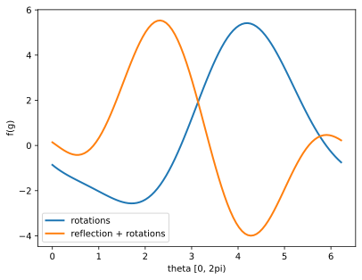
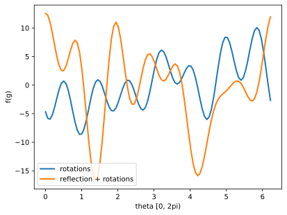
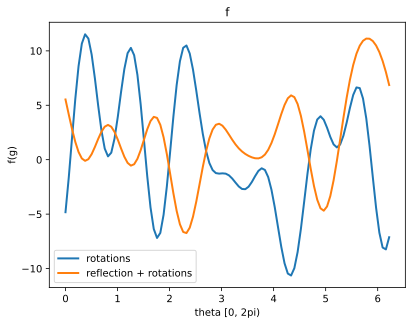
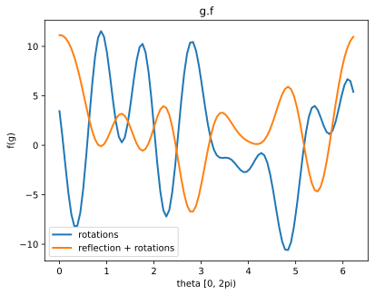
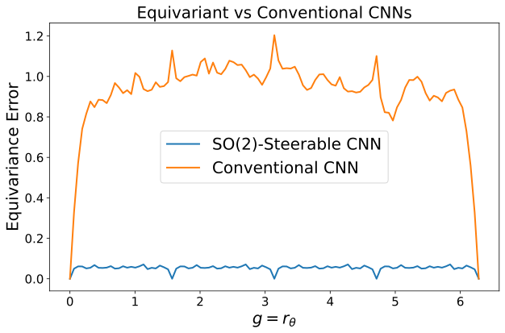
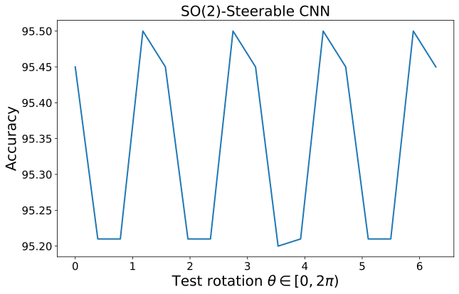
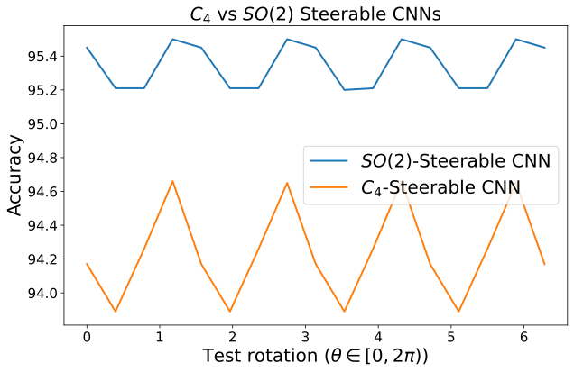

During the lectures, you have learnt that the symmetries of a machine learning task can be modelled with groups. In the previous tutorial, you have also studied the framework of Group-Convolutional Neural Networks (GCNNs), which describes a neural architecture design equivariant to general groups.
The feature maps of a GCNN are functions over the elements of the group. A naive implementation of group-convolution requires computing and storing a response for each group element. For this reason, the GCNN framework is not particularly convenient to implement networks equivariant to groups with infinite elements.
Steerable CNNs are a more general framework which solves this issue. The key idea is that, instead of storing the value of a feature map on each group element, the model stores the Fourier transform of this feature map, up to a finite number of frequencies.
In this tutorial, we will first introduce some Representation theory and Fourier theory (non-commutative harmonic analysis) and, then, we will explore how this idea is used in practice to implement Steerable CNNs.
Prerequisite Knowledge
Throughout this tutorial, we will assume you are already familiar with some concepts of group theory, such as groups, group actions (in particular on functions), semi-direct product and order of a group, as well as basic linear algebra.
We start by importing the necessary packages. You can run the following command to install all the requirements:
import torchimport numpy as npimport scipyimport osnp.set_printoptions(precision=3, suppress=True, linewidth=10000, threshold=100000)import matplotlib%matplotlib inlineimport matplotlib.pyplot as plt# If the fonts in the plots are incorrectly rendered, comment out the next two linesfrom IPython.display import set_matplotlib_formatsset_matplotlib_formats('svg', 'pdf') # For exportmatplotlib.rcParams['lines.linewidth'] =2.0import urllib.requestfrom urllib.error import HTTPErrorCHECKPOINT_PATH ="../../saved_models/DL2/GDL"
/opt/conda/lib/python3.8/site-packages/tqdm/auto.py:22: TqdmWarning: IProgress not found. Please update jupyter and ipywidgets. See https://ipywidgets.readthedocs.io/en/stable/user_install.html
from .autonotebook import tqdm as notebook_tqdm
/tmp/ipykernel_109/1932627903.py:13: DeprecationWarning: `set_matplotlib_formats` is deprecated since IPython 7.23, directly use `matplotlib_inline.backend_inline.set_matplotlib_formats()`
set_matplotlib_formats('svg', 'pdf') # For export
# Create checkpoint path if it doesn't exist yetos.makedirs(CHECKPOINT_PATH, exist_ok=True)# Files to downloadpretrained_files = ["steerable_c4-pretrained.ckpt","steerable_so2-pretrained.ckpt","steerable_c4-accuracies.npy","steerable_so2-accuracies.npy",]# Github URL where saved models are stored for this tutorialbase_url ="https://raw.githubusercontent.com/phlippe/saved_models/main/DL2/GDL/"# For each file, check whether it already exists. If not, try downloading it.for file_name in pretrained_files: file_path = os.path.join(CHECKPOINT_PATH, file_name)ifnot os.path.isfile(file_path): file_url = base_url + file_nameprint(f"Downloading {file_url}...")try: urllib.request.urlretrieve(file_url, file_path)except HTTPError as e:print("Something went wrong. Please contact the author with the full output including the following error:\n", e)
1. Representation Theory and Harmonic Analysis of Compact Groups
We will make use of the escnnlibrary throughout this tutorial. You can also find its documentation here.
try:from escnn.group import*exceptModuleNotFoundError: # Google Colab does not have escnn installed by default. Hence, we do it here if necessary!pip install --quiet git+https://github.com/AMLab-Amsterdam/lie_learn escnnfrom escnn.group import*
First, let’s create a group. We will use the Cyclic Group\(G=C_8\) as an example. This group contains the \(8\) planar rotations by multiples of \(\frac{2\pi}{8}\). In escnn, a groups are instances of the abstract class escnn.group.Group, which provides some useful functionalities. We instantiate groups via a factory method. To build the cyclic group of order \(8\), we use this factory method:
G = cyclic_group(N=8)# We can verify that the order of this group is 8:G.order()
8
A group is a collection of group elements together with a binary operation to combine them. This is implemented in the class escnn.group.GroupElement. We can access the identity element \(e \in G\) as
G.identity
0[2pi/8]
or sample a random element as
G.sample()
1[2pi/8]
Group elements can be combined via the binary operator @; we can also take the inverse of an element using ~:
a = G.sample()b = G.sample()print(a)print(b)print(a @ b)print(~a)
6[2pi/8]
1[2pi/8]
7[2pi/8]
2[2pi/8]
Representation theory is a fundamental element in Steerable CNNs and to construct a Fourier theory over groups. In this first section, we will introduce the essential concepts.
1.1 Group Representation
A linear group representation\(\rho\) of a compact group \(G\) on a vector space (called representation space) \(\mathbb{R}^d\) is a group homomorphism from \(G\) to the general linear group \(GL(\mathbb{R}^d)\), i.e. it is a map \(\rho : G \to \mathbb{R}^{d \times d}\) such that: \[\rho(g_1 g_2) = \rho(g1) \rho(g2) \quad \forall g_1,g_2 \in G \ .\]
In other words, \(\rho(g)\) is a \(d \times d\)invertible matrix. We refer to \(d\) as the size of the representation.
Example: the Trivial Representation
The simplest example of group representation is the trivial representation which maps every element to \(1 \in \mathbb{R}\), i.e. \(\rho: g \mapsto 1\). One can verify that it satisfies the condition above. We can construct this representation as follows:
rho = G.trivial_representation
rho is an instance of escnn.group.Representation. This class provides some functionalities to work with group representations. We can also use it as a callable function to compute the representation of a group element; this will return a squared matrix as a numpy.array. Let verify that the trivial representation does indeed verify the condition above:
Note that the trivial representation has size \(1\):
rho.size
1
Example: rotations
Another common example of group representations is given by 2D rotations. Let \(SO(2)\) be the group of all planar rotations; note that we can identify each rotation by an angle \(\theta \in [0, 2\pi)\). Then, the standard representation of planar rotations as \(2\times 2\) rotation matrices is a representation of \(SO(2)\):
where \(r_\theta \in SO(2)\) is a counter-clockwise rotation by \(\theta\). Let’s try to build this group and, then, verify that this is a representation:
Show that any representation \(\rho: G \to \mathbb{R}^{d \times d}\) also satisfies the following two properties:
let \(e \in G\) be the identity element. Then, \(\rho(e)\) is the identity matrix of size \(d\).
let \(g \in G\) and \(g^{-1}\) be its inverse (i.e. \(g \cdot g^{-1} = e\)). Then, \(\rho(g^{-1}) = \rho(g)^{-1}\).
ANSWER 1
First question. First, note that for any \(g \in G\): \[
\rho(g) = \rho(g \cdot e) = \rho(g) \rho(e)
\]
Because \(\rho(g)\) is invertible, we can left multiply by \(\rho(g)^{-1}\) to find that \(\rho(e)\) is the identity.
Second question. Note that \[
\rho(e) = \rho(g \cdot g^{-1}) = \rho(g) \rho(g^{-1})
\]
Using the fact \(\rho(e)\) is the identity, by left-multiplying by \(\rho(g)^{-1}\) we recover the original statement.
Direct Sum
We can combine representations to build a larger representation via the direct sum.
Given representations \(\rho_1 : G \to \mathbb{R}^{d_1 \times d_1}\) and \(\rho_2 : G \to \mathbb{R}^{d_2 \times d_2}\), their direct sum\(\rho_1 \oplus \rho_2: G \to \mathbb{R}^{(d_1 + d_2) \times (d_1 + d_2)}\) is defined as
Its action is therefore given by the independent actions of \(\rho_1\) and \(\rho_2\) on the orthogonal subspaces \(\mathbb{R}^{d_1}\) and \(\mathbb{R}^{d_2}\) of \(\mathbb{R}^{d_1 + d_2}\).
Another important representation is the regular representation. The regular representation describes the action of a group \(G\) on the vector space of functions over the group \(G\). Assume for the moment that the group \(G\) is finite, i.e. \(|G| < \infty\).
The set of functions over \(G\) is equivalent to the vector space \(\mathbb{R}^{|G|}\). We can indeed interpret a vector \(\mathbf{f} \in \mathbb{R}^{|G|}\) as a function over \(G\), where the \(i\)-th entry of \(\mathbf{f}\) is interpreted as the value of the function on the \(i\)-th element \(g_i \in G\).
The regular representation of \(G\) is a \(|G|\) dimensional representation. Recall the left action of \(G\) on a function \(f: G \to \mathbb{R}\):
\[
[g.f](h) := f(g^{-1} h)
\]
The new function \(g.f\) is still a function over \(G\) and belongs to the same vector space. If we represent the function \(f\) as a vector \(\mathbf{f}\), the vector representing the function \(g.f\) will have permuted entries with respect to \(\mathbf{f}\). This permutation is the regular representation of \(g \in G\).
QUESTION 2
Show that the space of functions over \(G\) is a vector space. To do so, show that functions satisfy the properties of a vector space; see here.
ANSWER 2
Let \(f_1, f_2, f_3: G \to \mathbb{R}\) be three functions and \(\alpha, \beta \in \mathbb{R}\) scalars. The point-wise sum of two functions is the function \([f_1 + f_2]: G \to \mathbb{R}\) defined as
\[
[f_1 + f_2](g) = f_1(g) + f_2(g)
\]
The scalar multiplication is also defined pointwise as
\[
[\alpha \cdot f_1](g) = \alpha f_1(G)
\]
We now verify the required properties of a vector space.
For finite groups, we can generate this representation. We assume that the \(i\)-th entry is associated with the element of \(G=C_8\) corresponing to a rotation by \(i \frac{2\pi}{8}\).
G = cyclic_group(8)rho = G.regular_representation
# note that the size of the representation is equal to the group's order |G|rho.size
8
the identity element maps a function to itself, so the entries are not permuted
The regular representation of the rotation by \(1\frac{2\pi}{8}\) just cyclically shifts each entry to the next position since \(r_{1\frac{2\pi}{8}}^{-1} r_{i\frac{2\pi}{8}} = r_{(i-1)\frac{2\pi}{8}}\):
Let’s see an example of the action on a function. We consider a function which is zero on all group elements apart from the identity (\(i=0\)).
f = np.zeros(8)f[0] =1f
array([1., 0., 0., 0., 0., 0., 0., 0.])
Observe that \(\rho(e) \mathbf{f} = \mathbf{f}\), where \(e = 0\frac{2\pi}{8}\) is the identity element.
rho(G.identity) @ f
array([ 1., 0., -0., 0., -0., -0., 0., -0.])
\(\mathbf{f}\) is non-zero only on the element \(e\). If an element \(g\) acts on this function, it moves the non-zero value to the entry associated with \(g\):
rho(G.element(1)) @ f
array([ 0., 1., -0., -0., -0., -0., -0., -0.])
rho(G.element(6)) @ f
array([ 0., -0., 0., -0., -0., -0., 1., -0.])
QUESTION 3
Prove the result above.
ANSWER 3
Let’s call \(\delta_g: G \to \mathbb{R}\) the function defined as
\[
\delta_g(h) = \begin{cases} 1 & \text{if } h = g \\ 0 & \text{otherwise}\end{cases}
\]
which is zero everywhere apart from \(g \in G\), where it is \(1\). The function \(\delta_e\) is represented by the vector \(\mathbf{f}\) above.
We now want to show that \([g.\delta_e](h) = \delta_g(h)\):
Two representations \(\rho\) and \(\rho'\) of a group \(G\) on the same vector space \(\mathbb{R}^d\) are called equivalent (or isomorphic) if and only if they are related by a change of basis \(Q \in \mathbb{R}^{d \times d}\), i.e. \[ \forall g \in G \quad \rho(g) = Q \rho'(g) Q^{-1} \ . \]
Equivalent representations behave similarly since their composition is basis-independent as seen by \[ \rho'(g_1) \rho'(g_2) = Q \rho(g_1)Q^{−1}Q \rho(g_2)Q^{−1} = Q \rho(g_1)\rho(g_2)Q^{−1} \ .\]
Direct sum and change of basis matrices provide a way to combine representations to construct larger and more complex representations. In the next example, we concatenate two trivial representations and two regular representations and apply a random change of basis \(Q\). The final representation is formally defined as: \[
\rho(g) = Q
\left(
\rho_\text{trivial} \oplus
\rho_\text{regular} \oplus
\rho_\text{regular} \oplus
\rho_\text{trivial}
\right)
Q^{-1}
\]
Under minor conditions, any representation can be decomposed in this way, that is, any representation \(\rho\) of a compact group \(G\) can be written as a direct sum of a number of smaller representations, up to a change of basis. These “smaller representations” can not be decomposed further and play a very important role in the theory of group representations and steerable CNNs and are called irreducible representations, or simply irreps.
The set of irreducible representations of a group \(G\) is generally denoted as \(\hat{G}\). We will often use the notation \(\hat{G} = \{\rho_j\}_j\) to index this set.
We can access the irreps of a group via the irrep() method. The trivial representation is always an irreducible representation. For \(G=C_8\), we access it with the index \(j=0\):
Irreducible representations provide the building blocks to construct any representation \(\rho\) via direct sums and change of basis, i.e: \[ \rho = Q \left( \bigoplus_{j \in \mathcal{I}} \rho_j \right) Q^{-1} \]
where \(\mathcal{I}\) is an index set (possibly with repetitions) over \(\hat{G}\).
Internally, any escnn.group.Representation is indeed implemented as a list of irreps (representing the index set \(\mathcal{I}\)) and a change of basis \(Q\). An irrep is identified by a tupleid.
Let’s see an example. Let’s take the regular representaiton of \(C_8\) and check its decomposition into irreps:
# let's access second irreprho_id = rho.irreps[1]rho_1 = G.irrep(*rho_id)# we verify it is the irrep j=1 we described beforerho_1(g)
array([[ 0.707, -0.707],
[ 0.707, 0.707]])
Finally, let’s verify that this direct sum and this change of basis indeed yield the regular representation
# evaluate all the irreps in rho.irreps:irreps = [ G.irrep(*irrep)(g) for irrep in rho.irreps]# build the direct sumdirect_sum = np.asarray(scipy.sparse.block_diag(irreps, format='csc').todense())print('Regular representation of', g)print(rho(g))print()print('Direct sum of the irreps:')print(direct_sum)print()print('Apply the change of basis on the direct sum of the irreps:')print(rho.change_of_basis @ direct_sum @ rho.change_of_basis_inv)print()print('Are the two representations equal?', np.allclose(rho(g), rho.change_of_basis @ direct_sum @ rho.change_of_basis_inv))
We can finally approach the harmonic analysis of functions over a group \(G\).
Note that a representation \(\rho: G \to \mathbb{R}^{d \times d}\) can be interpreted as a collection of \(d^2\) functions over \(G\), one for each matrix entry of \(\rho\). The Peter-Weyl theorem states that the collection of functions in the matrix entries of all irreps \(\hat{G}\) of a group \(G\) spans the space of all (square-integrable) functions over \(G\).
This result gives us a way to parameterize functions over the group. This is the focus of this section. In particular, this is useful to parameterize functions over groups with infinite elements.
In this section, we will first consider the dihedral group\(D_8\) as example. This is the group containing the \(8\) planar rotations by angles multiple of \(\frac{2\pi}{8}\) and reflection along the \(X\) axis. The group contains in total \(16\) elements (\(8\) normal rotations and \(8\) rotations preceeded by the reflection).
G = dihedral_group(8)G.order()
16
# element representing the reflection (-) and no rotationsG.reflection
(-, 0[2pi/8])
# element representing a rotation by pi/2 (i.e. 2 * 2pi/8) and no reflections (+)G.element((0, 2))
(+, 2[2pi/8])
# reflection followed by a rotation by pi/2print(G.element((0, 2)) @ G.reflection)# we can also directly generate this element asprint(G.element((1, 2)))
(-, 2[2pi/8])
(-, 2[2pi/8])
# a rotation by pi/2 followed by a reflection is equivalent to a reclection followed by a rotation by 6*2pi/8G.reflection @ G.element((0, 2))
(-, 6[2pi/8])
The list of all elements in the group is obtaied as:
For most groups, the entries of the irreps don’t only span the space of functions but form also a basis (i.e. these functions are mutually orthogonal to each other). Therefore, we can write a function \(f: G \to \mathbb{R}\) as \[ f(g) = \sum_{\rho_j \in \hat{G}} \sum_{m,n < d_j} w_{j,m,n} \cdot \sqrt{d_j} [\rho_j(g)]_{mn}\]
where \(d_j\) is the dimension of the irrep \(\rho_j\), while \(m, n\) index the \(d_j^2\) entries of \(\rho_j\). The coefficients \(\{ w_{j, m, n} \in \mathbb{R} \}_{j, m, n}\) parameterize the function \(f\) on this basis. The \(\sqrt{d_j}\) is a scalar factor to ensure the basis is normalized.
We rewrite this expression in a cleaner form by using the following fact. If \(A, B \in \mathbb{R}^{d \times d}\), then \[\text{Tr}(A^T B) = \sum_{m, n < d} A_{mn} B_{mn} \in \mathbb{R} \ .\]
By definining \(\hat{f}(\rho_j) \in \mathbb{R}^{d_j \times d_j}\) as the matrix containing the \(d_j^2\) coefficients \(\{ w_{j, m, n} \in \mathbb{R} \}_{m, n < d_j}\), we can express the Inverse Fourier Transform as: \[ f(g) = \sum_{\rho_j \in \hat{G}} \sqrt{d_j} \text{Tr}\left(\rho_j(g)^T \hat{f}(\rho_j)\right) \]
Similarly, we can project a general function \(f: G \to \mathbb{R}\) on an element \(\rho_{j,m,n}: G \to \mathbb{R}\) of the basis via: \[ w_{j,m,n} = \frac{1}{|G|} \sum_{g \in G} f(g) \sqrt{d_j} [\rho_j(g)]_{m, n} \ . \]
The projection over all entries of \(\rho_j\) can be more cleanly written as follows: \[ \hat{f}(\rho_j) = \frac{1}{|G|} \sum_{g \in G} f(g) \sqrt{d_j} \rho_j(g) \ . \]
which we refer to as Fourier Transform.
If the group \(G\) is infinite, we replace the average over the group elements with an integral over them: \[ \hat{f}(\rho_j) = \int_G f(g) \sqrt{d_j} \rho_j(g) dg \ , \]
For a finite group \(G\), we can access all its irreps by using the Group.irreps() method. Let’s see an example:
irreps = G.irreps()print(f'The dihedral group D8 has {len(irreps)} irreps')
The dihedral group D8 has 7 irreps
# the first one, is the 1-dimensional trivial representationprint(irreps[0] == G.trivial_representation == G.irrep(0, 0))
True
QUESTION 4
We can now implement the Fourier Transform and the Inverse Fourier Transform for the Dihedral Group \(D_8\). Using the equations above, implement the following methods:
def fourier_transform_D8(f: np.array):# the method gets in input a function on the elements of D_8# and should return a dictionary mapping each irrep's `id` to the corresponding Fourier Transform# The i-th element of `f` stores the value of the function on the group element `G.elements[i]` G = dihedral_group(8)assert f.shape == (16,), f.shape ft = {}######################### INSERT YOUR CODE HERE:for rho in G.irreps(): d = rho.size rho_g = np.stack([rho(g) for g in G.elements], axis=0) ft[rho.id] = (f.reshape(-1, 1, 1) * rho_g).mean(0) * np.sqrt(d)########################return ft
def inverse_fourier_transform_D8(ft: dict):# the method gets in input a dictionary mapping each irrep's `id` to the corresponding Fourier Transform# and should return the function `f` on the elements of D_8# The i-th element of `f` stores the value of the function on the group element `G.elements[i]` G = dihedral_group(8) f = np.zeros(16)######################### INSERT YOUR CODE HERE:for rho in G.irreps(): d = rho.sizefor i, g inenumerate(G.elements): f[i] += np.sqrt(d) * (ft[rho.id] * rho(g)).sum()########################return f
We now want to verify that the Fourier Transform and the Inverse Fourier Transform are inverse of each other:
f = np.random.randn(16)ft = fourier_transform_D8(f)new_f = inverse_fourier_transform_D8(ft)assert np.allclose(f, new_f)
Parameterizing functions over infinite groups
This allows us to also parameterize functions over infinite groups, such as \(O(2)\), i.e. the group of all planar rotations and reflections.
G = o2_group()
# the group has infinite many elements, so the `order` method just returns -1G.order()
-1
The equations remain the same, but this group has an infinite number of irreps. We can, however, parameterize a function over the group by only considering a finite number of irreps in the sum inside the definition of Inverse Fourier Transform. Let \(\tilde{G} \subset \hat{G}\) be a finite subset of the irreps of \(G\). We can then write the following transforms within the subspace of functions spanned only by the entries of the irreps in \(\tilde{G}\).
We can now implement the Inverse Fourier Transform for the Orthogonal Group \(O(2)\). Since the group has infinite many elements, we can not store the values the function take on each element. Instead, we just sample the function on a particular element of the group:
def inverse_fourier_transform_O2(g: GroupElement, ft: dict):# the method gets in input a dictionary mapping each irrep's `id` to the corresponding Fourier Transform# and a group element `g` # The method should return the value of the function evaluated on `g`. G = o2_group() f =0######################### INSERT YOUR CODE HERE:for rho, ft_rho in ft.items(): rho = G.irrep(*rho) d = rho.size f += np.sqrt(d) * (ft_rho * rho(g)).sum()########################return f
Let’s plot a function. First we generate a random function by using a few irreps.
irreps = [G.irrep(0, 0)] + [G.irrep(1, j) for j inrange(3)]ft = { rho.id: np.random.randn(rho.size, rho.size)for rho in irreps}
Then, we generate a grid on the group where to evaluate the function, i.e. we choose a finite set of element of \(G\). Like the Dihedral group, \(O(2)\) contains rotations (parameterized by an angle \(\theta \in [0, 2\pi)\)) and a reflection followed by any rotation. For example:
G.sample()
(+, 0.026961821470776897)
To build our grid, we sample \(100\) rotations and \(100\) rotations preceeded by a reflection:
N =100thetas = [i*2*np.pi/N for i inrange(N)]grid_rot = [G.element((0, theta)) for theta in thetas]grid_refl = [G.element((1, theta)) for theta in thetas]
We now evaluate the function over all these elements and, finally, plot it:
f_rot = [ inverse_fourier_transform_O2(g, ft) for g in grid_rot]f_refl = [ inverse_fourier_transform_O2(g, ft) for g in grid_refl]plt.plot(thetas, f_rot, label='rotations')plt.plot(thetas, f_refl, label='reflection + rotations')plt.xlabel('theta [0, 2pi)')plt.ylabel('f(g)')plt.legend()plt.show()

Observe that using more irreps allows one to parameterize more flexible functions. Let’s try to add some more:
irreps = [G.irrep(0, 0)] + [G.irrep(1, j) for j inrange(8)]ft = { rho.id: np.random.randn(rho.size, rho.size)for rho in irreps}f_rot = [ inverse_fourier_transform_O2(g, ft) for g in grid_rot]f_refl = [ inverse_fourier_transform_O2(g, ft) for g in grid_refl]plt.plot(thetas, f_rot, label='rotations')plt.plot(thetas, f_refl, label='reflection + rotations')plt.xlabel('theta [0, 2pi)')plt.ylabel('f(g)')plt.legend()plt.show()

Fourier Transform of shifted functions
Recall that a group element \(g \in G\) can act on a function \(f: G \to \mathbb{R}\) as: \[ [g.f](h) = f(g^{-1}h) \ .\]
The Fourier transform defined before has the convenient property that the Fourier transform of \(f\) and of \([g.f]\) are related as follows: \[\widehat{g.f}(\rho_j) = \rho_j(g) \widehat{f} \]
irreps = [G.irrep(0, 0)] + [G.irrep(1, j) for j inrange(8)]# first, we generate a random function, as earlierft = { rho.id: np.random.randn(rho.size, rho.size)for rho in irreps}# second, we sample a random group element `g`g = G.sample()print(f'Transforming the function with g={g}')# finally, we transform the Fourier coefficients as in the equations above:gft = { rho.id: rho(g) @ ft[rho.id]for rho in irreps}# Let's now visualize the two functions:f_rot = [ inverse_fourier_transform_O2(g, ft) for g in grid_rot]f_refl = [ inverse_fourier_transform_O2(g, ft) for g in grid_refl]gf_rot = [ inverse_fourier_transform_O2(g, gft) for g in grid_rot]gf_refl = [ inverse_fourier_transform_O2(g, gft) for g in grid_refl]plt.plot(thetas, f_rot, label='rotations')plt.plot(thetas, f_refl, label='reflection + rotations')plt.xlabel('theta [0, 2pi)')plt.ylabel('f(g)')plt.title('f')plt.legend()plt.show()plt.plot(thetas, gf_rot, label='rotations')plt.plot(thetas, gf_refl, label='reflection + rotations')plt.xlabel('theta [0, 2pi)')plt.ylabel('f(g)')plt.title('g.f')plt.legend()plt.show()
Transforming the function with g=(+, 0.4933335011719361)


From the Fourier Transform to the Regular Representation
For simplicity, we can stack all the Fourier coefficients (the output of the Fourier transform, that is, the input of the inverse Fourier transform) into a unique vector. We define the vector \(\mathbf{f}\) as the stack of the columns of each Fourier coefficients matrix \(f(\rho_j)\).
Let’s first introduce some notation. We denote the stack of two vectors \(\mathbf{v_1}, \mathbf{v_2}\) as \(\mathbf{v_1} \oplus \mathbf{v_2}\). The use of \(\oplus\) is not random: if \(\rho_1\) is a representation acting on \(\mathbf{v_1}\) and \(\rho_2\) is a representation acting on \(\mathbf{v_2}\), then the direct sum\(\rho_1 \oplus \rho_2\) acts on the concatenated vector \(\mathbf{v_1} \oplus \mathbf{v_2}\).
Second, we denote by \(\text{vec}(A)\) the vector which is the stack of the columns of a matrix \(A\). In numpy, this is written as A.T.reshape(-1), where the transpose is necessary since numpy stacks rows by default.
Then, we write: \[ \mathbf{f} = \bigoplus_{\rho_j} \text{vec}(\hat{f}(\rho_j)) \ .\]
Moreover, by using \(\widehat{g.f}(\rho_j) = \rho_j(g) \hat{f}(\rho_j)\), we see that the vector containing the coefficients of the function \([g.f]\) will be: \[
\bigoplus_{\rho_j} \text{vec}(\rho_j(g) \hat{f}(\rho_j)) =
\bigoplus_{\rho_j} \left(\bigoplus^{d_j} \rho_j(g)\right) \text{vec}(\hat{f}(\rho_j))
\]
In other words, the group \(G\) is acting on the vector \(\mathbf{f}\) with the following representation: \[
\rho(g) = \bigoplus_{\rho_j} \bigoplus^{d_j} \rho_j(g)
\]
i.e. \(\rho(g) \mathbf{f}\) is the vector containing the Fourier coefficients of the function \([g.f]\).
Note that, essentially, the representation \(\rho\) acts on a vector space containing functions over \(G\). This should remind you of the regular representation we defined for finite groups earlier. Indeed, it turns out that, if \(G\) is finite, the representation \(\rho\) we have just constructed is isomorphic (equivalent) to the regular representation defined earlier. The change of basis \(Q\) is a matrix which performs the Fourier transform, while \(Q^{-1}\) performs the inverse Fourier transform. More formally: \[ \rho_\text{reg}(g) = Q^{-1} \left(\bigoplus_{\rho_j} \bigoplus^{d_j} \rho_j(g) \right) Q \]
where each irrep \(\rho_j\) is repeated \(d_j\) times, i.e. a number of times equal to its size.
Intuition: recall that a function \(f : G \to \mathbb{R}\) is just a vector living in a vector space. Such vector can be expressed with respect to any basis for this vector space. The first time we introduced the regular representation for finite groups, we chose a basis where each axis is associated with a group element; the action of \(G\) is realized in this basis by a permutation of all the axes. Here, instead, we defined a basis for the same vector space where \(G\) acts indipendently on different subsets of the axes, i.e. the action of \(G\) is a block-diagonal matrix (the direct sum of irreps). This is often a more convenient choice of basis as we will see later.
Let verify this equivalence for the Dihdral group \(D_8\):
G = dihedral_group(8)rho_irreps = []for rho_j in G.irreps(): d_j = rho_j.size# repeat each irrep a number of times equal to its size rho_irreps += [rho_j]*d_jrho = directsum(rho_irreps)print('The representations have the same size:')print(rho.size, G.regular_representation.size)print('And contain the same irreps:')print(rho.irreps)print(G.regular_representation.irreps)# Fourier transform matrix:Q = G.regular_representation.change_of_basis# inverse Fourier transform matrix:Qinv = G.regular_representation.change_of_basis_inv# let's check that the two representations are indeed equivalentg = G.sample()rho_g = rho(g)reg_g = G.regular_representation(g)print()print('Are the two representations equivalent?', np.allclose(Q @ rho_g @ Qinv, reg_g))
The representations have the same size:
16 16
And contain the same irreps:
[(0, 0), (1, 0), (1, 1), (1, 1), (1, 2), (1, 2), (1, 3), (1, 3), (1, 4), (0, 4)]
[(0, 0), (1, 0), (1, 1), (1, 1), (1, 2), (1, 2), (1, 3), (1, 3), (1, 4), (0, 4)]
Are the two representations equivalent? True
When \(G\) is not finite, we can not explicitly store the regular representation \(\rho_\text{reg}\) or the Fourier transform matrix \(Q\), since they are infinite dimensional. Nevertheless, as we have done earlier, we can just consider a subset of all functions, spanned only by a finite number of irreps. We can sample the function on any group element via the Inverse Fourier Transform when needed, without the need to compute the full Inverse Fourier Transform \(Q^{-1}\) to store all values.
This is the underlying idea we will exploit later to build GCNNs equivariant to infinite groups.
We can easily generate this representation as (bl_regular_representation stands for “band-limited”, since only a limited subset of irreps, i.e. frequencies, is used):
G = o2_group()rho = G.bl_regular_representation(7)rho.irreps
Irreps with redundant entries: the case of \(SO(2)\)
We need to conclude with a final note about the Fourier transform. When we introduced it earlier, we said that the entries of the irreps form a basis for the functions over most groups. Indeed, there exists some groups where the entries of the irreps are partially redundant and, therefore, form an overcomplete basis. This is the case, for example, of the group of planar rotations \(SO(2)\) (or the group of \(N\) discrete rotations \(C_N\)). Indeed, an irrep of \(SO(2)\) has form:
for \(\theta \in [0, 2\pi)\), where the integer \(j \in \mathbb{N}\) is interpreted as the rotational frequency.
You can observe that the two columns of \(\rho_j(r_\theta)\) contain redundant elements and span the same \(2\) dimensional space of functions. It is indeed sufficient to consider only one of the two columns to parameterize functions over \(SO(2)\). This also means that the irrep \(\rho_j\) appears only once (instead of \(d_j=2\) times) in the regular representation.
We don’t generally need to worry much about this, since we can generate the representation as earlier:
G = so2_group()rho = G.bl_regular_representation(7)# observe that each irrep is now repeated only once, even if some are 2-dimensionalrho.irreps
[(0,), (1,), (2,), (3,), (4,), (5,), (6,), (7,)]
2. From Group CNNs to Steerable CNNs
We consider a GCNN equivariant to a semi-direct product group \(\mathbb{R}^n \rtimes G\), with compact group \(G \leq O(n)\). This setting covers equivariance to isometries (distance preserving transformations) of the Euclidean space \(\mathbb{R}^n\); in particular, it includes equivariance to translations in \(\mathbb{R}^n\) and to a origin-preserving symmetry \(G\) (e.g. rotations or reflections in \(n\)-dimensions). We call \(G\) a point group.
If \(G=O(n)\), the group of all rotations and reflections in \(\mathbb{R}^n\), then \(E(n) = \mathbb{R}^n \rtimes O(n)\) is called the Euclidean group, and includes all isometries of \(\mathbb{R}^n\).
2.1 Feature Fields
In a GCNN, a feature map is a signal \(f: \mathbb{R}^n \times G \to \mathbb{R}\). The action of an element \((x, g) \in \mathbb{R}^n \rtimes G\) is:
\[ [(x, g).f](y,h):= f(g^{-1}(y-x), g^{-1}h) \]
where \(x, y \in \mathbb{R}^n\) and \(g, h \in G\).
QUESTION 7
Prove the action has indeed this form.
ANSWER 7
First, recall the group law: for any \((x, g)\) and \((y, h) \in \mathbb{R}^n \rtimes G\)\[
(x, g) \cdot (y, h) = (x + g.y, gh)
\]
where \(x, y, g.y \in \mathbb{R}^n\) and \(g, h \in G\). Second, recall the inverse element is \((x, g)^{-1} = (-g^{-1}.x, g^{-1})\). Then: \[
[(x, g).f](y, h) = f((x, g)^{-1} \cdot (y, h)) = f(-g^{-1}.x + g^{-1}.y, g^{-1}h) = f(g^{-1}.(y-x), g^{-1}h)
\]
In a GCNN, a feature map \(f\) is stored as a multi-dimensional array with an axis for each of the \(n\) spatial dimensions and one for the group \(G\).
In a steerable CNN, we replace the \(G\) axis with a “Fourier” axis, which contains \(c\) Fourier coefficients used to parameterize a function over \(G\), as described in the previous section. Again, let’s call \(\rho: G \to \mathbb{R}^{c \times c}\) the representation of \(G\) acting on these \(c\) coefficients. The result is equivalent to a standard GCNN if \(G\) is finite (and we have \(c = |G|\)), but we can now also use infinite \(G\), such as \(SO(2)\).
A feature map \(f\) can now be interpreted as a vector field on the space \(\mathbb{R}^n\), i.e.: \[ f: \mathbb{R}^n \to \mathbb{R}^c \]
which assigns a \(c\)-dimensional feature vector \(f(x)\in\mathbb{R}^c\) to each spatial position \(x\in\mathbb{R}^n\). We call such vector field a feature vector field.
The action of \(\mathbb{R}^n \rtimes G\) on one such feature vector field is defined as:
\[ [(x, g).f](y):= \rho(g) f(g^{-1}(y-x)) \]
where \(x, y \in \mathbb{R}^n\) and \(g \in G\).
QUESTION 8
Prove that this is indeed the right action of \(\mathbb{R}^n \rtimes G\) on the feature vector field \(f: \mathbb{R}^n \to \mathbb{R}^c\). Recall the action of this group over the functions of the form \(\underline{f}: \mathbb{R}^n \rtimes G \to \mathbb{R}\) that we described earlier. Moreover, note that the vector \(f(x) \in \mathbb{R}^c\) contains the \(c\) Fourier coefficients of the function \(\underline{f}(x, \cdot) : G \to \mathbb{R}\) along its \(G\) axis, i.e.: \[
f(x) = \bigoplus_{\rho_j} \text{vec}\left(\widehat{\underline{f}(x, \cdot)}(\rho_j)\right)
\]
ANSWER 8:
We know from the previous question that \[
[(x, g).\underline{f}](y, h) = \underline{f}(g^{-1}(y-x), g^{-1}h)
\]
Recall also that \(\rho(g) = \bigoplus_{\rho_j} \bigoplus^{d_j} \rho_j(g) \in \mathbb{R}^{c \times c}\) is the regular representation of \(G\) acting on the vector of Fourier coefficients. Then: \[
\begin{align}
[(x, g).f](y)
&= \bigoplus_{\rho_j} \text{vec}\left(\left[\widehat{[(x, g).\underline{f}](y, \cdot)}\right](\rho_j)\right) \\
&= \bigoplus_{\rho_j} \text{vec}\left(\left[\widehat{\underline{f}(g^{-1}(y-x), g^{-1}\cdot)}\right](\rho_j)\right) \\
&= \bigoplus_{\rho_j} \text{vec}\left(\rho_j(g) \left[\widehat{\underline{f}(g^{-1}(y-x), \cdot)}\right](\rho_j)\right) \\
&= \rho(g) f(g^{-1}(y-x))
\end{align}
\]
Note that in the equations above, the square brakets in \([\widehat{\cdot}]\) indicate that \(\widehat{\cdot}\) covers the whole content of the brackets.
General Steerable CNNs
The framework of Steerable CNNs is actually more general and allows for any representation \(\rho\) of \(G\). A different choice of \(\rho\) generally require some structural change in the architecture, e.g. by adapting the non-linearity used to ensure equivariance. Anyways, for simplicity, we will stick with the Fourier example in this tutorial.
Throughout the rest of this tutorial, we will assume \(n=2\) for simplicity. That means we will be working for example with planar images and with the isometries of the plane (2D rotations or mirroring). The actions of \(g \in G=SO(2)\) on two examples of feature vector fields over \(\mathbb{R}^2\) are shown next. On the left, \(\rho\) is the trivial representation of \(SO(2)\) while, on the right, \(\rho\) is the representation of \(SO(2)\) as \(2\times 2\) rotation matrices.
feature field examples
2.2 Defining a Steerable CNN
We can now proceed with building a Steerable CNN. First we import some other useful packages.
from escnn import groupfrom escnn import gspacesfrom escnn import nn
First, we need to choose the group \(G\) of point symmetries (reflections and rotations) which are being considered. All of these choices are subgroups \(G\leq O(2)\) of the orthogonal group.
For simplicity, we first consider the finite group \(G=C_4\), which models the \(4\)rotations by angle \(\theta \in \big\{0, \frac{\pi}{2}, \pi, \frac{3\pi}{2}\big\}\). Because these are perfect symmetries of the grid, transforming an image with this group does not require any interpolation. We will later extend our examples to an infinite group such as \(SO(2)\) or \(O(2)\).
Recall that a semi-direct product \(\mathbb{R}^2 \rtimes G\) is defined by \(G\) but also by the action of \(G\) on \(\mathbb{R}^2\). We determine both the point group\(G\) and its action on the space\(\mathbb{R}^2\) by instantiating a subclass of gspace.GSpace. For the rotational action of \(G=C_4\) on \(\mathbb{R}^2\) this is done by:
r2_act = gspaces.rot2dOnR2(N=4)r2_act
C4_on_R2[(None, 4)]
# we can access the group G asG = r2_act.fibergroupG
C4
Having specified the symmetry transformation on the base space\(\mathbb{R}^2\), we next need to define the representation \(\rho: G \to \mathbb{R}^{c \times c}\) which describes how a feature vector field\(f : \mathbb{R}^2 \to \mathbb{R}^c\) transforms under the action of \(G\). This transformation law of feature fields is implemented by nn.FieldType.
We instantiate the nn.FieldType modeling a GCNN feature by passing it the gspaces.GSpace instance and the regular representation of \(G=C_4\). We call a feature field associated with the regular representation \(\rho_\text{reg}\) a regular feature field.
The deep feature spaces of a GCNN typically comprise multiple channels. Similarly, the feature spaces of a steerable CNN can include multiple independent feature fields. This is achieved via direc sum, but stacking multiple copies of \(\rho\).
For example, we can use \(3\) copies of the regular representation \(\rho_\text{reg}: G \to \mathbb{R}^{|G|}\). The full feature space is in this case modeled as a stacked field \(f: \mathbb{R}^2 \to \mathbb{R}^{3|G|}\) which transforms according to the direct sum of three regular representations:
We instantiate a nn.FieldType composed of \(3\) regular representations by passing the full field representation as a list of three regular representations:
# Technically, one can also construct the direct-sum representation G.regular_representation + G.regular_representation + G.regular_representation as done # before. Passing a list containing 3 copies of G.regular_representation allows for more efficient implementation of certain operations internally.feat_type = nn.FieldType(r2_act, [G.regular_representation]*3)feat_type
[C4_on_R2[(None, 4)]: {regular (x3)}(12)]
Input Features
Each hidden layer of a steerable CNN has its own transformation law which the user needs to specify (equivalent to the choice of number of channels in each layer of a conventional CNN). The input and output of a steerable CNN are also feature fields and their type (i.e. transformation law) is typically determined by the inference task.
The most common example is that of gray-scale input images. A rotation of a gray-scale image is performed by moving each pixel to a new position without changing their intensity values. The invariance of the scalar pixel values under rotations is modeled by the trivial representation\(\rho_0: G\to\mathbb{R},\ g\mapsto 1\) of \(G\) and identifies them as scalar fields. Formally, a scalar field is a function \(f: \mathbb{R}^2 \to \mathbb{R}\) mapping to a feature vector with \(c=1\) channels. A rotation \(r_\theta \in C_4\) transforms this scalar field as
When we build a model equivariant to a group \(G\), we require that the output produced by the model transforms consistently when the input transforms under the action of an element \(g \in G\). For a function \(F\) (e.g. a neural network), the equivariance constraint requires:
where \(\mathcal{T}^\text{in}_g\) is the transformation of the input by the group element \(g\) while \(\mathcal{T}^\text{out}_g\) is the transformation of the output by the same element. The field typefeat_type_in we have just defined above precisely describes \(\mathcal{T}^\text{in}\). The transformation law \(\mathcal{T}^\text{out}\) of the output of the first layer is similarly chosen by defining an instance feat_type_out of nn.FieldType.
For example, let’s use \(3\)regular feature fields in output:
Once having defined how the input and output feature spaces should transform, we can build neural network functions as equivariant modules. These are implemented as subclasses of an abstract base class nn.EquivariantModule which itself inherits from torch.nn.Module.
Equivariant Convolution Layer: We start by instantiating a convolutional layer that maps between fields of types feat_type_in and feat_type_out.
Let \(\rho_\text{in}: G \to \mathbb{R}^{c_\text{in} \times c_\text{in}}\) and \(\rho_\text{out}: G \to \mathbb{R}^{c_\text{out} \times c_\text{out}}\) be respectively the representations of \(G\) associated with feat_type_in and feat_type_out. Then, an equivariant convolution layer is a standard convolution layer with a filter \(k: \mathbb{R}^2 \to \mathbb{R}^{c_\text{out} \times c_\text{in}}\) (note the number of input and output channels) which satisfies a particular steerability constraint: \[
\forall g \in G, x \in \mathbb{R}^2 \quad k(g.x) = \rho_\text{out}(g) k(x) \rho_\text{in}(g)^{-1}
\]
In particular, the use of convolution guarantees the translation equivariance, while the fact the filters satisfy this steerability constraint guarantees the \(G\)-equivairance.
QUESTION 9
Show that if a filter \(k: \mathbb{R}^2 \to \mathbb{R}^{c_\text{out} \times c_\text{in}}\) satisfies the constraint above, the convolution with it is equivariant to \(G\), i.e. show that \[
f_\text{out} = k \star f_\text{in} \implies [g.f_\text{out}] = k \star [g.f_\text{in}]
\]
for all \(g \in G\).
The action on the features \(f_\text{in}\) and \(f_\text{out}\) is the one previously defined, i.e: \[
[g.f_\text{in}](x) = \rho_\text{in}(g) f(g^{-1}x)
\]
and \[
[g.f_\text{out}](x) = \rho_\text{out}(g) f(g^{-1}x)
\]
while the convolution is defined as \[
f_\text{out}(y) = [k \star f_\text{in}](y) = \int_{\mathbb{R}^2} k(x-y) f_\text{in}(x) dx
\]
ANSWER 9
Note that, because \(k\) satisfies the steerabile constraint, it follows that \(k(x) = \rho_\text{out}(g) k(g^{-1}.x) \rho_\text{in}(g)^{-1}\). Then:
The steerability constraint restricts the space of possible learnable filters to a smaller space of equivariant filters. Solving this constraint goes beyond the scope of this tutorial; fortunately, the nn.R2Conv module takes care of properly parameterizing the filter \(k\) such that it satisfies the constraint.
Each equivariant module has an input and output type. As a function (.forward()), it requires its inputs to transform according to its input type and is guaranteed to return feature fields associated with its output type. To prevent the user from accidentally feeding an incorrectly transforming input field into an equivariant module, we perform a dynamic type checking. In order to do so, we define geometric tensors as data containers. They are wrapping a PyTorchtorch.Tensor to augment them with an instance of FieldType.
Let’s build a few random 32x32 gray-scale images and wrap them into an nn.GeometricTensor:
x = torch.randn(4, 1, 32, 32)# FieldType is a callable object; its call method can be used to wrap PyTorch tensors into GeometricTensorsx = feat_type_in(x)assertisinstance(x.tensor, torch.Tensor)assertisinstance(x, nn.GeometricTensor)
As usually done in PyTorch, an image or feature map is stored in a 4-dimensional array of shape BxCxHxW, where B is the batch-size, C is the number of channels and W and H are the spatial dimensions.
We can feed a geometric tensor to an equivariant module as we feed normal tensors in PyTorch’s modules:
y = conv(x)
We can verify that the output is indeed associated with the output type of the convolutional layer:
assert y.type== feat_type_out
Lets check whether the output transforms as described by the output type when the input transforms according to the input type. The \(G\)-transformation of a geometric tensor is hereby conveniently done by calling nn.GeometricTensor.transform().
# for each group elementfor g in G.elements:# transform the input with the current group element according to the input type x_transformed = x.transform(g)# feed the transformed input in the convolutional layer y_from_x_transformed = conv(x_transformed)# the result should be equivalent to rotating the output produced in the # previous block according to the output type y_transformed_from_x = y.transform(g)assert torch.allclose(y_from_x_transformed.tensor, y_transformed_from_x.tensor, atol=1e-5), g
Any network operation is required to be equivariant. escnn.nn provides a wide range of equivariant network modules which guarantee this behavior.
Non-Linearities: As an example, we will next apply an equivariant nonlinearity to the output feature field of the convolution. Since the regular representations of a finite group \(G\) consists of permutation matrices, any pointwise nonlinearity like ReLUs is equivariant. Note that this is not the case for many other choices of representations / field types!
We instantiate a escnn.nn.ReLU, which, as an nn.EquivariantModule, requires to be informed about its input type to be able to perform the type checking. Here we are passing feat_type_out, the output of the equivariant convolution layer, as input type. It is not necessary to pass an output type to the nonlinearity since this is here determined by its input type.
relu = nn.ReLU(feat_type_out)z = relu(y)
We can verify the equivariance again:
# for each group elementfor g in G.elements: y_transformed = y.transform(g) z_from_y_transformed = relu(y_transformed) z_transformed_from_y = z.transform(g)assert torch.allclose(z_from_y_transformed.tensor, z_transformed_from_y.tensor, atol=1e-5), g
Deeper Models: In deep learning we usually want to stack multiple layers to build a deep model. As long as each layer is equivariant and consecutive layers are compatible, the equivariance property is preserved by induction.
The compatibility of two consecutive layers requires the output type of the first layer to be equal to the input type of the second layer.
In case we feed an input with the wrong type to a module, an error is raised:
layer1 = nn.R2Conv(feat_type_in, feat_type_out, kernel_size=3)layer2 = nn.ReLU(feat_type_in) # the input type of the ReLU should be the output type of the convolutionx = feat_type_in(torch.randn(3, 1, 7, 7))try: y = layer2(layer1(x))exceptAssertionErroras e:print(e)
Error! the type of the input does not match the input type of this module
Simple deeper architectures can be built using a SequentialModule:
As every layer is equivariant and consecutive layers are compatible, the whole model is equivariant.
x = torch.randn(1, 1, 17, 17)x = feat_type_in(x)y = model(x)# for each group elementfor g in G.elements: x_transformed = x.transform(g) y_from_x_transformed = model(x_transformed) y_transformed_from_x = y.transform(g)assert torch.allclose(y_from_x_transformed.tensor, y_transformed_from_x.tensor, atol=1e-5), g
Invariant Pooling Layer: Usually, at the end of the model we want to produce a single feature vector to use for classification. To do so, it is common to pool over the spatial dimensions, e.g. via average pooling.
This produces (approximatively) translation-invariant feature vectors.
# average pooling with window size 11avgpool = nn.PointwiseAvgPool(feat_type_out, 11)y = avgpool(model(x))print(y.shape)
torch.Size([1, 8, 1, 1])
In our case, the feature vectors \(f(x)\in\mathbb{R}^c\) associated to each point \(x\in\mathbb{R}^2\) have a well defined transformation law. The output of the model now transforms according to feat_type_out (here two \(C_4\) regular fields, i.e. 8 channels). For our choice of regular representations (which are permutation representations) the channels in the feature vectors associated to each point permute when the input is rotated.
for g in G.elements:print(f'rotation by {g}:', y.transform(g).tensor[0, ...].detach().numpy().squeeze())
Many learning tasks require to build models which are invariant under rotations. We can compute invariant features from the output of the model using an invariant map. For instance, we can take the maximum value within each regular field. We do so using nn.GroupPooling:
invariant_map = nn.GroupPooling(feat_type_out)y = invariant_map(avgpool(model(x)))for g in G.elements:print(f'rotation by {g}:', y.transform(g).tensor[0, ...].detach().numpy().squeeze())
rotation by 0[2pi/4]: [0.59 0.234]
rotation by 1[2pi/4]: [0.59 0.234]
rotation by 2[2pi/4]: [0.59 0.234]
rotation by 3[2pi/4]: [0.59 0.234]
# for each group elementfor g in G.elements:# rotated the input image x_transformed = x.transform(g) y_from_x_transformed = invariant_map(avgpool(model(x_transformed))) y_transformed_from_x = y # no .transform(g) needed since y should be invariant!# check that the output did not change# note that here we are not rotating the original output y as beforeassert torch.allclose(y_from_x_transformed.tensor, y_transformed_from_x.tensor, atol=1e-6), g
2.3 Steerable CNN with infinite group \(G\)
We can now repeat the same constructions with \(G\) being an infinite group, e.g. the group of all planar rotations \(G=SO(2)\).
# use N=-1 to indicate all rotationsr2_act = gspaces.rot2dOnR2(N=-1)r2_act
SO(2)_on_R2[(None, -1)]
G = r2_act.fibergroupG
SO(2)
# For simplicity we take a single-channel gray-scale image in input and we output a single-channel gray-scale image, i.e. we use scalar fields in input and outputfeat_type_in = nn.FieldType(r2_act, [G.trivial_representation])feat_type_out = nn.FieldType(r2_act, [G.trivial_representation])
As intermidiate feature types, we want to use again the regular representation. Because \(G\) has an infinite number of elements, we use use the Fourier transform idea described earlier. For example, we will use the first three irreps of \(G=SO(2)\), which contains cosines and sines of frequency \(0\), \(1\) and \(2\). Earlier, we built this representation as
rho = G.bl_regular_representation(2)
To apply a non-linearity, e.g. ELU, we can use the Inverse Fourier Transform to sample the function, apply the non-linearity and, finally, compute the Fourier Transform to recover the coeffients. Because \(G\) has infinite elements, the Fourier Transform requires an integral over \(G\); this can be approximated by a sum over a finite number of samples. The more samples one take, the better the approximation will be, although this also increase the computational cost.
Fortunately, the class nn.FourierELU takes care of most of these details. We can just specify which irreps to consider (G.bl_irreps(2) returns the list of irreps up to frequency 2), the number of channels (i.e. copies of the regular representation) and the number N of elements of \(G\) where to sample the function:
nonlinearity = nn.FourierELU(r2_act, 16, irreps=G.bl_irreps(2), N=12)# we do not need to pre-define the feature type: FourierELU will create it internally and we can just access it asfeat_type_hid = nonlinearity.in_type# note also the its input and output types are the sameassert nonlinearity.in_type == nonlinearity.out_type
Let’s build a simple \(G=SO(2)\) equivariant model:
and check its equivariance to a few elements of \(SO(2)\):
x = torch.randn(1, 1, 23, 23)x = feat_type_in(x)y = equivariant_so2_model(x)# check equivariance to N=16 rotationsN =16try:for i inrange(N): g = G.element(i*2*np.pi/N) x_transformed = x.transform(g) y_from_x_transformed = equivariant_so2_model(x_transformed) y_transformed_from_x = y.transform(g)assert torch.allclose(y_from_x_transformed.tensor, y_transformed_from_x.tensor, atol=1e-3), gexcept:print('Error! The model is not equivariant!')
Error! The model is not equivariant!
QUESTION 10
The model is not perfectly equivariant to \(G=SO(2)\) ! Why is this an expected behaviour?
ANSWER 10
The \(SO(2)\) group includes all continuous planar rotations. However, when an image is represented on a pixel grid, only the \(4\) rotations by angles multiple of \(\pi/2\) are perfect, while other rotations involve some form of interpolation and generally introduce some noise. This prevents perfect equivariance to all rotations, since rotated versions of the same image inherently include some noise. A similar argument applies to the filters used during convolution: the steerability constraint described before involve a rotation of the filter \(k\) itself, but also the filter needs to be represented on discrete grid.
While the model can not be perfectly equivariant, we can compare it with a conventional CNN baseline. Let’s build a CNN similar to our equivariant model but which is not constrained to be equivariant:
To compare the two models, we compute their equivariance error for a few elements of \(G\). We define the equivariance error of a model \(F\) with respect to a group element \(g \in G\) and an input \(x\) as: \[
\epsilon_g(F) = \frac{||F(g.X) - g.F(X)||_2}{||F(x)||_2}
\]
Note that this is a form of relative error. Let’s now compute the equivariance error of the two models:
# let's generate a random image of shape W x WW =37x = torch.randn(1, 1, W, W)# Because a rotation by an angle smaller than 90 degrees moves pixels outsize the image, we mask out all pixels outside the central disk# We need to do this both for the input and the outputdef build_mask(W): center_mask = np.zeros((2, W, W)) center_mask[1, :, :] = np.arange(0, W) - W //2 center_mask[0, :, :] = np.arange(0, W) - W //2 center_mask[0, :, :] = center_mask[0, :, :].T center_mask = center_mask[0, :, :] **2+ center_mask[1, :, :] **2<.9*(W //2) **2 center_mask = torch.tensor(center_mask.reshape(1, 1, W, W), dtype=torch.float)return center_mask# create the mask for the inputinput_center_mask = build_mask(W)# mask the input imagex = x * input_center_maskx = feat_type_in(x)# compute the output of both modelsy_equivariant = equivariant_so2_model(x)y_conventional = feat_type_out(conventional_model(x.tensor))# create the mask for the output imagesoutput_center_mask = build_mask(y_equivariant.shape[-1])# We evaluate the equivariance error on N=100 rotationsN =100error_equivariant = []error_conventional = []# for each of the N rotationsfor i inrange(N+1): g = G.element(i / N *2*np.pi)# rotate the input x_transformed = x.transform(g) x_transformed.tensor *= input_center_mask# F(g.X) feed the transformed images in both models y_from_x_transformed_equivariant = equivariant_so2_model(x_transformed).tensor y_from_x_transformed_conventional = conventional_model(x_transformed.tensor)# g.F(x) transform the output of both models y_transformed_from_x_equivariant = y_equivariant.transform(g) y_transformed_from_x_conventional = y_conventional.transform(g)# mask all the outputs y_from_x_transformed_equivariant = y_from_x_transformed_equivariant * output_center_mask y_from_x_transformed_conventional = y_from_x_transformed_conventional * output_center_mask y_transformed_from_x_equivariant = y_transformed_from_x_equivariant.tensor * output_center_mask y_transformed_from_x_conventional = y_transformed_from_x_conventional.tensor * output_center_mask# compute the relative error of both models rel_error_equivariant = torch.norm(y_from_x_transformed_equivariant - y_transformed_from_x_equivariant).item() / torch.norm(y_equivariant.tensor).item() rel_error_conventional = torch.norm(y_from_x_transformed_conventional - y_transformed_from_x_conventional).item() / torch.norm(y_conventional.tensor).item() error_equivariant.append(rel_error_equivariant) error_conventional.append(rel_error_conventional)# plot the error of both models as a function of the rotation angle thetafig, ax = plt.subplots(figsize=(10, 6))xs = [i*2*np.pi / N for i inrange(N+1)]plt.plot(xs, error_equivariant, label='SO(2)-Steerable CNN')plt.plot(xs, error_conventional, label='Conventional CNN')plt.title('Equivariant vs Conventional CNNs', fontsize=20)plt.xlabel(r'$g = r_\theta$', fontsize=20)plt.ylabel('Equivariance Error', fontsize=20)ax.tick_params(axis='both', which='major', labelsize=15)plt.legend(fontsize=20)plt.show()

3. Build and Train Steerable CNNs
Finally, we will proceed with implementing a Steerable CNN and train it on rotated MNIST.
Dataset
We will evaluate the model on the rotated MNIST dataset. First, we download the (non-rotated) MNIST 12k data:
# download the dataset!wget -nc http://www.iro.umontreal.ca/~lisa/icml2007data/mnist.zip# uncompress the zip file!unzip -n mnist.zip-d mnist
File ‘mnist.zip’ already there; not retrieving.
/bin/bash: unzip: command not found
Then, we build the dataset and some utility functions:
class MnistDataset(Dataset):def__init__(self, mode, rotated: bool=True):assert mode in ['train', 'test']if mode =="train":file="mnist/mnist_train.amat"else:file="mnist/mnist_test.amat" data = np.loadtxt(file) images = data[:, :-1].reshape(-1, 28, 28).astype(np.float32)# images are padded to have shape 29x29.# this allows to use odd-size filters with stride 2 when downsampling a feature map in the model pad = Pad((0, 0, 1, 1), fill=0)# to reduce interpolation artifacts (e.g. when testing the model on rotated images),# we upsample an image by a factor of 3, rotate it and finally downsample it again resize1 = Resize(87) # to upsample resize2 = Resize(29) # to downsample totensor = ToTensor()if rotated:self.images = torch.empty((images.shape[0], 1, 29, 29)) for i in tqdm(range(images.shape[0]), leave=False): img = images[i] img = Image.fromarray(img, mode='F') r = (np.random.rand() *360.)self.images[i] = totensor(resize2(resize1(pad(img)).rotate(r, Image.BILINEAR))).reshape(1, 29, 29)else:self.images = torch.zeros((images.shape[0], 1, 29, 29)) self.images[:, :, :28, :28] = torch.tensor(images).reshape(-1, 1, 28, 28)self.labels = data[:, -1].astype(np.int64)self.num_samples =len(self.labels)def__getitem__(self, index): image, label =self.images[index], self.labels[index]return image, labeldef__len__(self):returnlen(self.labels)
# Set the random seed for reproducibilitynp.random.seed(42)# build the rotated training and test datasetsmnist_train = MnistDataset(mode='train', rotated=True)train_loader = torch.utils.data.DataLoader(mnist_train, batch_size=64)mnist_test = MnistDataset(mode='test', rotated=True)test_loader = torch.utils.data.DataLoader(mnist_test, batch_size=64)# for testing purpose, we also build a version of the test set with *non*-rotated digitsraw_mnist_test = MnistDataset(mode='test', rotated=False)
\(SO(2)\) equivariant architecture
We now build an \(SO(2)\) equivariant CNN.
Because the inputs are still gray-scale images, the input type of the model is again a scalar field. In the intermidiate layers, we will use regular fields, such that the models are equivalent to group-equivariant convolutional neural networks (GCNNs).
The final classification is performed by a fully connected layer.
class SO2SteerableCNN(torch.nn.Module):def__init__(self, n_classes=10):super(SO2SteerableCNN, self).__init__()# the model is equivariant under all planar rotationsself.r2_act = gspaces.rot2dOnR2(N=-1)# the group SO(2)self.G: SO2 =self.r2_act.fibergroup# the input image is a scalar field, corresponding to the trivial representation in_type = nn.FieldType(self.r2_act, [self.r2_act.trivial_repr])# we store the input type for wrapping the images into a geometric tensor during the forward passself.input_type = in_type# We need to mask the input image since the corners are moved outside the grid under rotationsself.mask = nn.MaskModule(in_type, 29, margin=1)# convolution 1# first we build the non-linear layer, which also constructs the right feature type# we choose 8 feature fields, each transforming under the regular representation of SO(2) up to frequency 3# When taking the ELU non-linearity, we sample the feature fields on N=16 points activation1 = nn.FourierELU(self.r2_act, 8, irreps=G.bl_irreps(3), N=16, inplace=True) out_type = activation1.in_typeself.block1 = nn.SequentialModule( nn.R2Conv(in_type, out_type, kernel_size=7, padding=1, bias=False), nn.IIDBatchNorm2d(out_type), activation1, )# convolution 2# the old output type is the input type to the next layer in_type =self.block1.out_type# the output type of the second convolution layer are 16 regular feature fields activation2 = nn.FourierELU(self.r2_act, 16, irreps=G.bl_irreps(3), N=16, inplace=True) out_type = activation2.in_typeself.block2 = nn.SequentialModule( nn.R2Conv(in_type, out_type, kernel_size=5, padding=2, bias=False), nn.IIDBatchNorm2d(out_type), activation2 )# to reduce the downsampling artifacts, we use a Gaussian smoothing filterself.pool1 = nn.SequentialModule( nn.PointwiseAvgPoolAntialiased(out_type, sigma=0.66, stride=2) )# convolution 3# the old output type is the input type to the next layer in_type =self.block2.out_type# the output type of the third convolution layer are 32 regular feature fields activation3 = nn.FourierELU(self.r2_act, 32, irreps=G.bl_irreps(3), N=16, inplace=True) out_type = activation3.in_type self.block3 = nn.SequentialModule( nn.R2Conv(in_type, out_type, kernel_size=5, padding=2, bias=False), nn.IIDBatchNorm2d(out_type), activation3 )# convolution 4# the old output type is the input type to the next layer in_type =self.block3.out_type# the output type of the fourth convolution layer are 64 regular feature fields activation4 = nn.FourierELU(self.r2_act, 32, irreps=G.bl_irreps(3), N=16, inplace=True) out_type = activation4.in_type self.block4 = nn.SequentialModule( nn.R2Conv(in_type, out_type, kernel_size=5, padding=2, bias=False), nn.IIDBatchNorm2d(out_type), activation4 )self.pool2 = nn.SequentialModule( nn.PointwiseAvgPoolAntialiased(out_type, sigma=0.66, stride=2) )# convolution 5# the old output type is the input type to the next layer in_type =self.block4.out_type# the output type of the fifth convolution layer are 96 regular feature fields activation5 = nn.FourierELU(self.r2_act, 64, irreps=G.bl_irreps(3), N=16, inplace=True) out_type = activation5.in_type self.block5 = nn.SequentialModule( nn.R2Conv(in_type, out_type, kernel_size=5, padding=2, bias=False), nn.IIDBatchNorm2d(out_type), activation5 )# convolution 6# the old output type is the input type to the next layer in_type =self.block5.out_type# the output type of the sixth convolution layer are 64 regular feature fields activation6 = nn.FourierELU(self.r2_act, 64, irreps=G.bl_irreps(3), N=16, inplace=True) out_type = activation6.in_type self.block6 = nn.SequentialModule( nn.R2Conv(in_type, out_type, kernel_size=5, padding=1, bias=False), nn.IIDBatchNorm2d(out_type), activation6 )self.pool3 = nn.PointwiseAvgPoolAntialiased(out_type, sigma=0.66, stride=1, padding=0)# number of output invariant channels c =64# last 1x1 convolution layer, which maps the regular fields to c=64 invariant scalar fields# this is essential to provide *invariant* features in the final classification layer output_invariant_type = nn.FieldType(self.r2_act, c*[self.r2_act.trivial_repr])self.invariant_map = nn.R2Conv(out_type, output_invariant_type, kernel_size=1, bias=False)# Fully Connected classifierself.fully_net = torch.nn.Sequential( torch.nn.BatchNorm1d(c), torch.nn.ELU(inplace=True), torch.nn.Linear(c, n_classes), )def forward(self, input: torch.Tensor):# wrap the input tensor in a GeometricTensor# (associate it with the input type) x =self.input_type(input)# mask out the corners of the input image x =self.mask(x)# apply each equivariant block# Each layer has an input and an output type# A layer takes a GeometricTensor in input.# This tensor needs to be associated with the same representation of the layer's input type## Each layer outputs a new GeometricTensor, associated with the layer's output type.# As a result, consecutive layers need to have matching input/output types x =self.block1(x) x =self.block2(x) x =self.pool1(x) x =self.block3(x) x =self.block4(x) x =self.pool2(x) x =self.block5(x) x =self.block6(x)# pool over the spatial dimensions x =self.pool3(x)# extract invariant features x =self.invariant_map(x)# unwrap the output GeometricTensor# (take the Pytorch tensor and discard the associated representation) x = x.tensor# classify with the final fully connected layer x =self.fully_net(x.reshape(x.shape[0], -1))return x
Equivariance Test before training
Let’s instantiate the model:
model = SO2SteerableCNN().to(device)
The model is now randomly initialized. Therefore, we do not expect it to produce the right class probabilities.
However, the model should still produce the same output for rotated versions of the same image. This is true for rotations by multiples of \(\frac{\pi}{2}\), but is only approximate for other rotations.
Let’s test it on a random test image: we feed \(N=20\) rotated versions of the first image in the test set and print the output logits of the model for each of them.
def test_model_single_image(model: torch.nn.Module, x: torch.Tensor, N: int=8): np.set_printoptions(linewidth=10000) x = Image.fromarray(x.cpu().numpy()[0], mode='F')# to reduce interpolation artifacts (e.g. when testing the model on rotated images),# we upsample an image by a factor of 3, rotate it and finally downsample it again resize1 = Resize(87) # to upsample resize2 = Resize(29) # to downsample totensor = ToTensor() x = resize1(x)# evaluate the `model` on N rotated versions of the input image `x` model.eval()print()print('##########################################################################################') header ='angle | '+' '.join(["{:5d}".format(d) for d inrange(10)])print(header)with torch.no_grad():for r inrange(N): x_transformed = totensor(resize2(x.rotate(r*360./N, Image.BILINEAR))).reshape(1, 1, 29, 29) x_transformed = x_transformed.to(device) y = model(x_transformed) y = y.to('cpu').numpy().squeeze() angle = r *360./ Nprint("{:6.1f} : {}".format(angle, y))print('##########################################################################################')print()
# retrieve the first image from the test setx, y =next(iter(raw_mnist_test))# evaluate the modeltest_model_single_image(model, x, N=20)
The output of the model is already almost invariant but we observe small fluctuations in the outputs. This is the effect of the discretization artifacts (e.g. the pixel grid can not be perfectly rotated by any angle without interpolation) and can not be completely removed.
Training the model
Let’s train the model now. The procedure is the same used to train a normal PyTorch architecture:
# build the training and test functiondef test(model: torch.nn.Module):# test over the full rotated test set total =0 correct =0with torch.no_grad(): model.eval()for i, (x, t) inenumerate(test_loader): x = x.to(device) t = t.to(device) y = model(x) _, prediction = torch.max(y.data, 1) total += t.shape[0] correct += (prediction == t).sum().item()return correct/total*100.def train(model: torch.nn.Module, lr=1e-4, wd=1e-4, checkpoint_path: str=None):if checkpoint_path isnotNone: checkpoint_path = os.path.join(CHECKPOINT_PATH, checkpoint_path)if checkpoint_path isnotNoneand os.path.isfile(checkpoint_path): model.load_state_dict(torch.load(checkpoint_path)) model.eval()return loss_function = torch.nn.CrossEntropyLoss() optimizer = torch.optim.Adam(model.parameters(), lr=lr, weight_decay=wd)for epoch in tqdm(range(21)): model.train()for i, (x, t) inenumerate(train_loader): optimizer.zero_grad() x = x.to(device) t = t.to(device) y = model(x) loss = loss_function(y, t) loss.backward() optimizer.step()del x, y, t, lossif epoch %10==0: accuracy = test(model) print(f"epoch {epoch} | test accuracy: {accuracy}")if checkpoint_path isnotNone: torch.save(model.state_dict(), checkpoint_path)
Finally, train the \(SO(2)\) equivariant model:
# set the seed manually for reproducibilitytorch.manual_seed(42)model = SO2SteerableCNN().to(device)train(model, checkpoint_path="steerable_so2-pretrained.ckpt")accuracy = test(model) print(f"Test accuracy: {accuracy}")
Test accuracy: 94.98400000000001
def test_model_rotations(model: torch.nn.Module, N: int=24, M: int=2000, checkpoint_path: str=None):# evaluate the `model` on N rotated versions of the first M images in the test setif checkpoint_path isnotNone: checkpoint_path = os.path.join(CHECKPOINT_PATH, checkpoint_path)if checkpoint_path isnotNoneand os.path.isfile(checkpoint_path): accuracies = np.load(checkpoint_path)return accuracies.tolist() model.eval()# to reduce interpolation artifacts (e.g. when testing the model on rotated images),# we upsample an image by a factor of 3, rotate it and finally downsample it again resize1 = Resize(87) # to upsample resize2 = Resize(29) # to downsample totensor = ToTensor() accuracies = []with torch.no_grad(): model.eval()for r in tqdm(range(N)): total =0 correct =0for i inrange(M): x, t = raw_mnist_test[i] x = Image.fromarray(x.numpy()[0], mode='F') x = totensor(resize2(resize1(x).rotate(r*360./N, Image.BILINEAR))).reshape(1, 1, 29, 29).to(device) x = x.to(device) y = model(x) _, prediction = torch.max(y.data, 1) total +=1 correct += (prediction == t).sum().item() accuracies.append(correct/total*100.)if checkpoint_path isnotNone: np.save(checkpoint_path, np.array(accuracies))return accuracies
# plot the accuracy of as a function of the rotation angle theta applied to the test setfig, ax = plt.subplots(figsize=(10, 6))N =16xs = [i*2*np.pi / N for i inrange(N+1)]plt.plot(xs, accs_so2 + [accs_so2[0]])plt.title('SO(2)-Steerable CNN', fontsize=20)plt.xlabel(r'Test rotation $\theta \in [0, 2\pi)$', fontsize=20)plt.ylabel('Accuracy', fontsize=20)ax.tick_params(axis='both', which='major', labelsize=15)plt.show()

Even after training, the model is not perfectly \(SO(2)\) equivariant, but we observe the accuracy is rather stable to rotations.
\(C_4\) equivariant architecture
For comparison, let’s build a similar architecture equivariant only to \(N=4\) rotations.
class CNSteerableCNN(torch.nn.Module):def__init__(self, n_classes=10):super(CNSteerableCNN, self).__init__()# the model is equivariant to rotations by multiples of 2pi/Nself.r2_act = gspaces.rot2dOnR2(N=4)# the input image is a scalar field, corresponding to the trivial representation in_type = nn.FieldType(self.r2_act, [self.r2_act.trivial_repr])# we store the input type for wrapping the images into a geometric tensor during the forward passself.input_type = in_type# We need to mask the input image since the corners are moved outside the grid under rotationsself.mask = nn.MaskModule(in_type, 29, margin=1)# convolution 1# first we build the non-linear layer, which also constructs the right feature type# we choose 8 feature fields, each transforming under the regular representation of C_4 activation1 = nn.ELU(nn.FieldType(self.r2_act, 8*[self.r2_act.regular_repr]), inplace=True) out_type = activation1.in_typeself.block1 = nn.SequentialModule( nn.R2Conv(in_type, out_type, kernel_size=7, padding=1, bias=False), nn.IIDBatchNorm2d(out_type), activation1, )# convolution 2# the old output type is the input type to the next layer in_type =self.block1.out_type# the output type of the second convolution layer are 16 regular feature fields activation2 = nn.ELU(nn.FieldType(self.r2_act, 16*[self.r2_act.regular_repr]), inplace=True) out_type = activation2.in_typeself.block2 = nn.SequentialModule( nn.R2Conv(in_type, out_type, kernel_size=5, padding=2, bias=False), nn.IIDBatchNorm2d(out_type), activation2 )self.pool1 = nn.SequentialModule( nn.PointwiseAvgPoolAntialiased(out_type, sigma=0.66, stride=2) )# convolution 3# the old output type is the input type to the next layer in_type =self.block2.out_type# the output type of the third convolution layer are 32 regular feature fields activation3 = nn.ELU(nn.FieldType(self.r2_act, 32*[self.r2_act.regular_repr]), inplace=True) out_type = activation3.in_type self.block3 = nn.SequentialModule( nn.R2Conv(in_type, out_type, kernel_size=5, padding=2, bias=False), nn.IIDBatchNorm2d(out_type), activation3 )# convolution 4# the old output type is the input type to the next layer in_type =self.block3.out_type# the output type of the fourth convolution layer are 32 regular feature fields activation4 = nn.ELU(nn.FieldType(self.r2_act, 32*[self.r2_act.regular_repr]), inplace=True) out_type = activation4.in_type self.block4 = nn.SequentialModule( nn.R2Conv(in_type, out_type, kernel_size=5, padding=2, bias=False), nn.IIDBatchNorm2d(out_type), activation4 )self.pool2 = nn.SequentialModule( nn.PointwiseAvgPoolAntialiased(out_type, sigma=0.66, stride=2) )# convolution 5# the old output type is the input type to the next layer in_type =self.block4.out_type# the output type of the fifth convolution layer are 64 regular feature fields activation5 = nn.ELU(nn.FieldType(self.r2_act, 64*[self.r2_act.regular_repr]), inplace=True) out_type = activation5.in_type self.block5 = nn.SequentialModule( nn.R2Conv(in_type, out_type, kernel_size=5, padding=2, bias=False), nn.IIDBatchNorm2d(out_type), activation5 )# convolution 6# the old output type is the input type to the next layer in_type =self.block5.out_type# the output type of the sixth convolution layer are 64 regular feature fields activation6 = nn.ELU(nn.FieldType(self.r2_act, 64*[self.r2_act.regular_repr]), inplace=True) out_type = activation6.in_type self.block6 = nn.SequentialModule( nn.R2Conv(in_type, out_type, kernel_size=5, padding=1, bias=False), nn.IIDBatchNorm2d(out_type), activation6 )self.pool3 = nn.PointwiseAvgPoolAntialiased(out_type, sigma=0.66, stride=1, padding=0)# number of output invariant channels c =64 output_invariant_type = nn.FieldType(self.r2_act, c*[self.r2_act.trivial_repr])self.invariant_map = nn.R2Conv(out_type, output_invariant_type, kernel_size=1, bias=False)# Fully Connected classifierself.fully_net = torch.nn.Sequential( torch.nn.BatchNorm1d(c), torch.nn.ELU(inplace=True), torch.nn.Linear(c, n_classes), )def forward(self, input: torch.Tensor):# wrap the input tensor in a GeometricTensor# (associate it with the input type) x =self.input_type(input)# mask out the corners of the input image x =self.mask(x)# apply each equivariant block# Each layer has an input and an output type# A layer takes a GeometricTensor in input.# This tensor needs to be associated with the same representation of the layer's input type## Each layer outputs a new GeometricTensor, associated with the layer's output type.# As a result, consecutive layers need to have matching input/output types x =self.block1(x) x =self.block2(x) x =self.pool1(x) x =self.block3(x) x =self.block4(x) x =self.pool2(x) x =self.block5(x) x =self.block6(x)# pool over the spatial dimensions x =self.pool3(x)# extract invariant features x =self.invariant_map(x)# unwrap the output GeometricTensor# (take the Pytorch tensor and discard the associated representation) x = x.tensor# classify with the final fully connected layer x =self.fully_net(x.reshape(x.shape[0], -1))return x
Instantiate and train the \(C_4\) equivariant model:
Finally, let’s compare the performance of both models on the rotated test sets:
# plot the accuracy of as a function of the rotation angle theta applied to the test setfig, ax = plt.subplots(figsize=(10, 6))N=16xs = [i*2*np.pi / N for i inrange(N+1)]plt.plot(xs, accs_so2 + [accs_so2[0]], label=r'$SO(2)$-Steerable CNN')plt.plot(xs, accs_c4 + [accs_c4[0]], label=r'$C_4$-Steerable CNN')plt.title(r'$C_4$ vs $SO(2)$ Steerable CNNs', fontsize=20)plt.xlabel(r'Test rotation ($\theta \in [0, 2\pi)$)', fontsize=20)plt.ylabel('Accuracy', fontsize=20)ax.tick_params(axis='both', which='major', labelsize=15)plt.legend(fontsize=20)plt.show()

While perfect equivariance to \(SO(2)\) is not achievable due to the discretizations, the \(SO(2)\) equivariant architecture is more stable over the rotations of the test set than the \(C_4\) model. Moreover, since \(C_4\) is the only perfect symmetry of the pixel grid and since \(C_4 < SO(2)\), the \(SO(2)\) equivariant architecture is also perfectly equivariant to rotations by multiples of \(\pi/2\).
Conclusion
In this tutorial, you first leart about group representation theory and the Fourier Transform over compact groups. These are the mathematical tools used to formalize Steerable CNNs.
In the second part of this tutorial, you learnt about steerable feature fields and steerable CNNs. In particular, the previously defined Fourier transform allowed us to build a steerable CNN which is equivalent to a Group-Convolutional Neural Network (GCNN) equivariant to translations and the continuous group \(G=SO(2)\) of rotations.
In our steerable CNNs, we mostly leveraged the regular representation of the group \(G\), but the framework of steerable CNNs allows for a variety of representations. If you are interested in knowing more about steerable CNNs, this is a (non-exhaustive) list of relevant works you can check out: